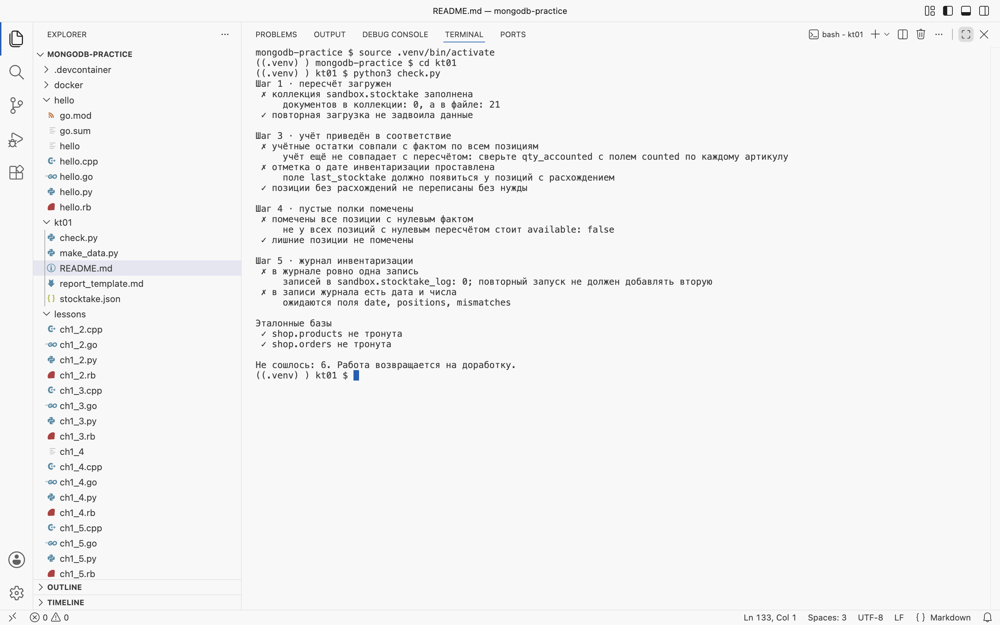

Справочник по MongoDB · контрольная точка · после модуля 1
КТ-01
Инвентаризация
склада
Самостоятельная работа. Разбора нет: есть данные, требования к результату и приёмка. Задача сформулирована так, как её ставят на работе, — и оценивается так же: по числам и по отчёту, который читает человек, не заглядывающий в базу.
- Формат
- Самостоятельно, без разбора
- База
sandbox.warehouse— 21 позиция- Время
- 90 минут
- Сдать
inventory.pyиinventory.md- Сдать
inventory.cppиinventory.md- Сдать
inventory.goиinventory.md- Сдать
inventory.rbиinventory.md
github.com/MaximBytecamp/mongodb-practice → kt01
В папке — задание, файл пересчёта stocktake.json и бланк отчёта report_template.md. Решения там нет и не будет: его разбирают на приёмке.
§1Ситуация
На складе провели пересчёт. Учётные остатки лежат в базе, результат пересчёта пришёл файлом. Нужно сверить одно с другим, привести учёт в порядок и написать отчёт, по которому решение примет заведующий складом — человек, который в базу не полезет.
| Источник | Что это | Поля |
|---|---|---|
sandbox.warehouse | Учёт: сколько числится | sku, title, category, qty_accounted, shelf |
kt01/stocktake.json | Пересчёт: сколько нашли на полках | sku, counted, counted_by |
docker compose run --rm reset # учёт на 21 позицию # без Docker: bash ../stend/load.sh в Git Bash python inventory.py # ваша работа python check.py # проверка, одна на все языки
bash ../stend/load.sh # учёт на 21 позицию python3 inventory.py # ваша работа python3 check.py # проверка, одна на все языки
bash ../stend/load.sh # учёт на 21 позицию python3 inventory.py # ваша работа python3 check.py # проверка, одна на все языки
# драйвер C++ под Windows собирается долго — всё делаем в контейнерах docker compose run --rm reset docker compose run --rm cpp kt01/inventory.cpp docker compose run --rm python kt01/check.py # проверка, одна на все языки
bash ../stend/load.sh # учёт на 21 позицию g++ -std=c++17 inventory.cpp -o inventory \ $(pkg-config --cflags --libs libmongocxx1) # brew install mongo-cxx-driver ./inventory # решение python3 check.py # проверка, одна на все языки
# в пакетах дистрибутива драйвер C++ старый — всё делаем в контейнерах docker compose run --rm reset docker compose run --rm cpp kt01/inventory.cpp docker compose run --rm python kt01/check.py # проверка, одна на все языки
docker compose run --rm reset # учёт на 21 позицию # без Docker: bash ../stend/load.sh в Git Bash go run inventory.go # ваша работа python check.py # проверка, одна на все языки
bash ../stend/load.sh # учёт на 21 позицию go run inventory.go # ваша работа python3 check.py # проверка, одна на все языки
bash ../stend/load.sh # учёт на 21 позицию go run inventory.go # ваша работа python3 check.py # проверка, одна на все языки
docker compose run --rm reset # учёт на 21 позицию # без Docker: bash ../stend/load.sh в Git Bash ruby inventory.rb # ваша работа python check.py # проверка, одна на все языки
bash ../stend/load.sh # учёт на 21 позицию ruby inventory.rb # ваша работа python3 check.py # проверка, одна на все языки
bash ../stend/load.sh # учёт на 21 позицию ruby inventory.rb # ваша работа python3 check.py # проверка, одна на все языки
Сервер или драйвер не ставится — те же шаги выполняются в контейнерах, команды одинаковые в PowerShell и bash. Как поднять стенд и что делать при ошибках — глава 1.1а.
docker compose up -d # один раз: сервер и учебные базы docker compose run --rm reset # учёт на 21 позицию docker compose run --rm python kt01/inventory.py docker compose run --rm python kt01/check.py
docker compose up -d # один раз: сервер и учебные базы docker compose run --rm reset # учёт на 21 позицию docker compose run --rm cpp kt01/inventory.cpp docker compose run --rm python kt01/check.py
docker compose up -d # один раз: сервер и учебные базы docker compose run --rm reset # учёт на 21 позицию docker compose run --rm go kt01/inventory.go docker compose run --rm python kt01/check.py
docker compose up -d # один раз: сервер и учебные базы docker compose run --rm reset # учёт на 21 позицию docker compose run --rm ruby kt01/inventory.rb docker compose run --rm python kt01/check.py
Эталонные базы shop, hh, logs, org в работе не участвуют и меняться не должны — это проверяется на приёмке.
Язык работы — любой из четырёх: проверка смотрит на состояние базы, а не на код. Драйверы и команды запуска те же, что в ПР-01.
§2Что сделать
- Загрузить пересчётИз
stocktake.jsonв коллекциюsandbox.stocktake— одним запросом. Повторный запуск скрипта не должен двоить данные. - Сверить учёт с фактомПо артикулу разделить позиции на три группы: сошлось, недостача, излишек. Для каждой — количество позиций и список артикулов.
- Привести учёт в соответствиеДля позиций с расхождением записать фактическое количество в
qty_accountedи добавитьlast_stocktakeс датой. Позиции, где всё сошлось, не трогать — и доказать это числомmodified_count. - Пометить пустые полкиПозициям с нулевым фактическим остатком проставить
available: false. У позиций, где товар есть, этого поля быть не должно. - Записать в журналКоллекция
sandbox.stocktake_log, один документ на инвентаризацию: дата, число позиций, число расхождений, суммарная недостача в штуках. Повторный запуск в тот же день не создаёт вторую запись. - Написать отчёт
inventory.mdпо бланку: числа, запросы, которыми они получены, и вывод для заведующего складом.
§3Требования
sandbox. Эталонные базы после работы совпадают с исходными.обязательноcount_documents с тем же фильтром.обязательно§4Бланк отчёта
Структура задана — она же используется на приёмке. Полностью бланк лежит в репозитории, здесь его костяк.
inventory.md
- 1. Что сверяли — данные, источник, число позиций в учёте и в пересчёте, артикулы, которых нет в учёте.
- 2. Результат сверки — таблица «сошлось / недостача / излишек»: позиции и артикулы. Суммарная недостача и излишек в штуках.
- 3. Что изменено в базе — по каждой операции: найдено, изменено, сам запрос. Если найдено и изменено различаются — объяснить почему.
- 4. Пустые полки — артикул, название, полка.
- 5. Что я проверил, чтобы не ошибиться — своими словами.
- 6. Вывод — два-три предложения для заведующего складом.
§4аГде писать работу и как сдать
Работа пишется и сдаётся из того же собственного репозитория, что ПР-01. Если его ещё нет — первые два шага ниже.
mongodb-practice/
check.py — отсюда запускается проверка- Заведите свой репозиторийНа GitHub: New repository, имя вроде
mongodb-ivanov, без README. Один репозиторий на все работы модуля. - Склонируйте его в папку
workВнутриmongodb-practice:git clone https://github.com/<ваш-логин>/mongodb-ivanov.git work. Папкаworkисключена из репозитория практик — ваши файлы в него не попадут, а стенд и Docker видят их так же, как всё остальное. - Подготовьте папку работыСоздайте
work/kt01и скопируйте в неё пересчёт и бланк:cp kt01/stocktake.json kt01/report_template.md work/kt01/Copy-Item kt01\stocktake.json, kt01\report_template.md work\kt01\. - Напишите скрипт и отчёт
inventory.pyinventory.cppinventory.goinventory.rbиinventory.mdпо бланку. Каждое число в отчёте — с запросом, которым оно получено. - Проверьте дваждыСброс, скрипт,
kt01/check.py— затем скрипт ещё раз и снова проверка. Второй запуск не должен ничего сломать. Вывод последней проверки вставьте в отчёт. - Отправьте и пришлите ссылкуИз папки
work:git add kt01,git commit -m "КТ-01: инвентаризация склада",git push.
docker compose run --rm reset docker compose run --rm python work/kt01/inventory.py docker compose run --rm python kt01/check.py docker compose run --rm python work/kt01/inventory.py # второй запуск docker compose run --rm python kt01/check.py
docker compose run --rm reset docker compose run --rm cpp work/kt01/inventory.cpp docker compose run --rm python kt01/check.py docker compose run --rm cpp work/kt01/inventory.cpp # второй запуск docker compose run --rm python kt01/check.py
docker compose run --rm reset docker compose run --rm go work/kt01/inventory.go docker compose run --rm python kt01/check.py docker compose run --rm go work/kt01/inventory.go # второй запуск docker compose run --rm python kt01/check.py
docker compose run --rm reset docker compose run --rm ruby work/kt01/inventory.rb docker compose run --rm python kt01/check.py docker compose run --rm ruby work/kt01/inventory.rb # второй запуск docker compose run --rm python kt01/check.py
Так выглядит проверка до начала работы — ни один шаг ещё не сделан. Скрипт говорит, что не так, но не подсказывает ответы:
Шаг 1 · пересчёт загружен
✗ коллекция sandbox.stocktake заполнена
документов в коллекции: 0, а в файле: 21
✓ повторная загрузка не задвоила данные
Шаг 3 · учёт приведён в соответствие
✗ учётные остатки совпали с фактом по всем позициям
учёт ещё не совпадает с пересчётом: сверьте qty_accounted с полем counted по каждому артикулу
✗ отметка о дате инвентаризации проставлена
поле last_stocktake должно появиться у позиций с расхождением
✓ позиции без расхождений не переписаны без нужды
Шаг 4 · пустые полки помечены
✗ помечены все позиции с нулевым фактом
не у всех позиций с нулевым пересчётом стоит available: false
✓ лишние позиции не помечены
Шаг 5 · журнал инвентаризации
✗ в журнале ровно одна запись
записей в sandbox.stocktake_log: 0; повторный запуск не должен добавлять вторую
✗ в записи журнала есть дата и числа
ожидаются поля date, positions, mismatches
Эталонные базы
✓ shop.products не тронута
✓ shop.orders не тронута
Не сошлось: 6. Работа возвращается на доработку.

check.py до начала работы — шесть пунктов не сошлось, ответы не подсказываются§5Как принимается
База пересоздаётся из репозитория, запускается ваш скрипт, числа из отчёта сверяются с тем, что получилось. Расхождение любого числа — работа возвращается.
| Критерий | Что смотрят |
|---|---|
| Числа сходятся | Отчёт против базы после запуска вашего скрипта |
| Скрипт повторяем | Второй запуск не меняет результат и не плодит записи |
| Эталон не тронут | shop, hh, logs, org совпадают с исходными |
| Отчёт читается | Вывод понятен человеку, который не открывал базу |
Почему у вас modified_count меньше, чем найдено документов. Что произойдёт, если запустить скрипт дважды. Как вы убедились, что не изменили эталонные базы. Какой запрос вы бы написали, если бы позиций было не 21, а миллион. Последний вопрос — про то, что перебор в Python перестанет работать; отвечают на него уже средствами модуля 4.
§6Подсказки, которые не выдают решение
- Сверка 21 позиции спокойно делается перебором в Python: сложите пересчёт в словарь
{sku: counted}и пройдите по учёту. $setзаписывает значение,$incменяет на разницу. Здесь честнее$set: вы записываете факт, а не поправку.- «Не плодить записи за ту же дату» — это
update_one(..., upsert=True)с датой в фильтре. - Дата берётся как
datetime.now(timezone.utc), ключ журнала — строка вида2026-09-09. - Поле, которого не должно быть, убирается через
$unset, а не записьюNone.
После контрольной
Дальше — модуль 2: язык фильтров целиком. Там появятся сравнения, «или», условия по массивам и проверка существования поля, и та же инвентаризация уложится в один запрос вместо перебора.